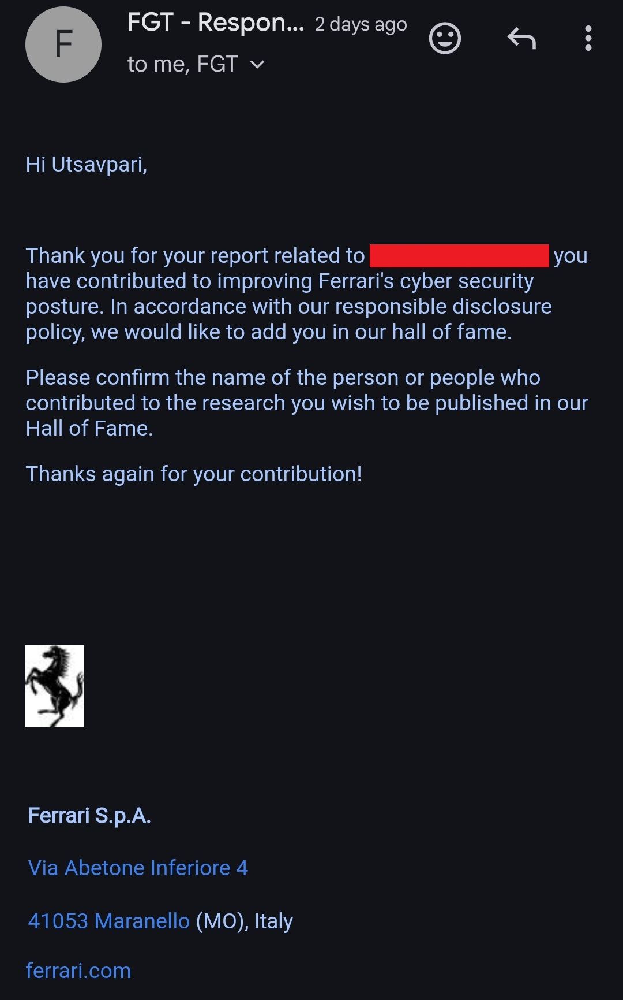

Hello Hackers 👨💻🔥
I hope you all are doing well and continuing to secure our digital world 🌍🔐
Today, I want to share my journey of getting into the Hall of Fame of Ferrari 🏎️✨
🚀 The Beginning
I saw many security researchers on LinkedIn and various online posts, and I noticed that getting added to Ferrari’s Hall of Fame is considered a huge achievement.
But getting a report accepted there is very tough 😅
Researchers need to put in a lot of effort to validate bugs because many reports get rejected by Ferrari. Many researchers, even from big brands, try hard, but sometimes reports get marked as duplicates or simply rejected.
Since I was recently acknowledged by Mercedes-Benz and Lamborghini 🏆, I decided to try for Ferrari as well.
⚔️ Motivation & Persistence
At that moment, I remembered my idols and with that motivation and blessings, I stood up, picked up the divine Pinak Dhanush 🏹, and started hunting on the battlefield of security research ⚔️💻
The journey was not easy.
I faced many challenges and got around 7 to 8 reports rejected by Ferrari within 1 to 2 months 😵💫
Rejections can be frustrating, but they also teach patience, validation, and persistence.
🧪 The Discovery
Finally… it happened 🎉🔥
I discovered a vulnerability involving a Sensitive Fileduring fuzzing that was leaking sensitive backend information ⚠️📂
Due to responsible disclosure and because the issue is still in the triage process 🔒, I cannot disclose the full details of the bug.
However, it was impactful enough to be acknowledged by Ferrari.
📩 Reporting & Recognition
After validating the issue properly, I submitted the report responsibly.
Ferrari reviewed the report, and the very next day, I saw my name in Ferrari’s Hall of Fame 🏆❤️

- ✅ Report accepted successfully
- 🏅 Hall of Fame recognition received
- 🏎️ One more dream achieved
You can check it here 👀